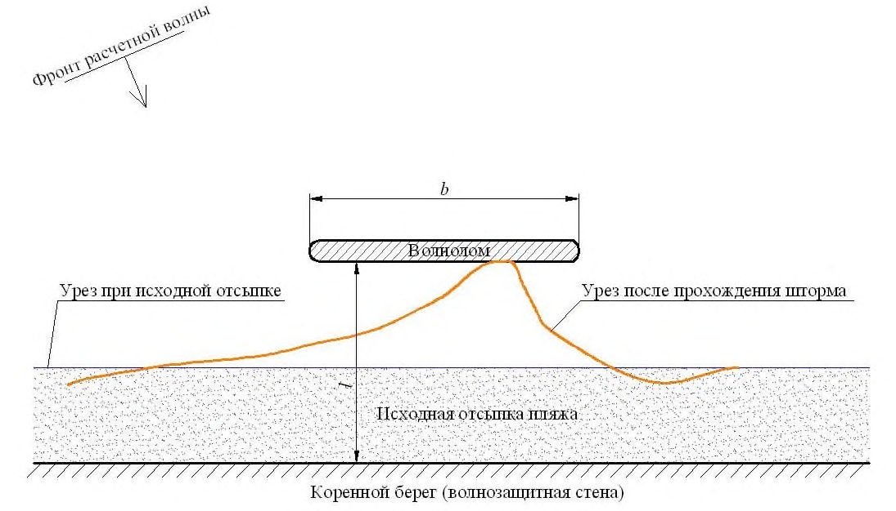
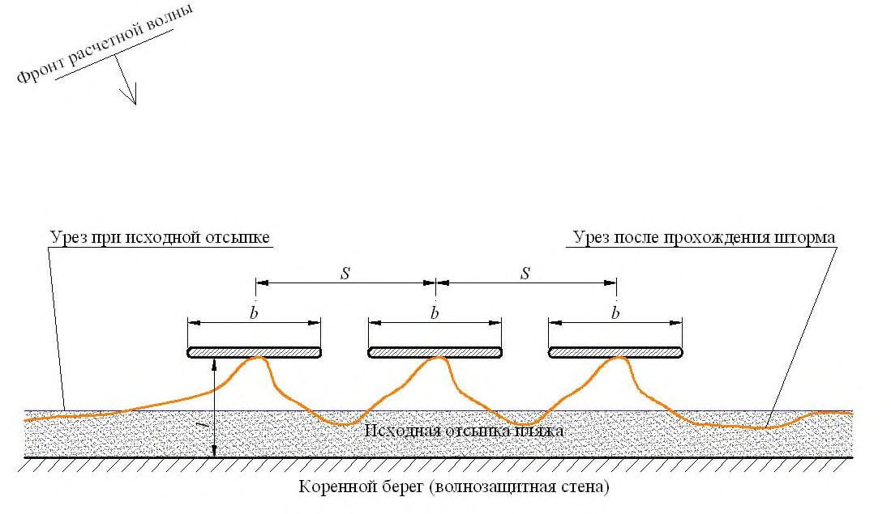
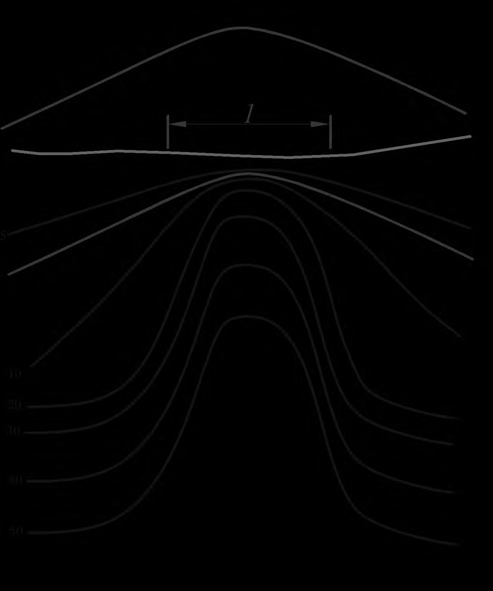

СП 277.1325800.2016 «Сооружения морские берегозащитные. Правила проектирования»
О документе: разработчики, утверждение, регистрация, ключевые слова
СП 277.1325800.2016
СП Сооружения морские берегозащитные
окончательная редакция
1 ИСПОЛНИТЕЛИ - АО «Научно-исследовательский институт транспортного строительства» (АО «ЦНИИС») - филиал АО «Научно-исследовательский институт транспортного строительства» «Научно-исследовательский центр «Морские берега» (филиал АО ЦНИИС «НИЦ «Морские берега»)
2 ВНЕСЕН Техническим комитетом по стандартизации ТК 465 «Строительство»
3 ПОДГОТОВЛЕН к утверждению Департаментом градостроительной деятельности и архитектуры Министерства строительства и жилищно-коммунального хозяйства Российской Федерации (Минстрой России)
4 УТВЕРЖДЕН Приказом Министерства строительства и жилищно-коммунального хозяйства Российской Федерации от 16 декабря 2016 г. № 963/пр и введен в действие с 17 июня 2017 г.
5 ЗАРЕГИСТРИРОВАН Федеральным агентством по техническому регулированию и метрологии (Росстандарт)
В случае пересмотра (замены) или отмены настоящего свода правил соответствующее уведомление будет опубликовано в установленном порядке. Соответствующая информация, уведомление и тексты размещаются также в информационной системе общего пользования - на официальном сайте разработчика (Минстрой России) в сети Интернет
© Минстрой России, 2016
Настоящий нормативный документ на может быть полностью или частично воспроизведен, тиражирован и распространен в качестве официального издания на территории Российской Федерации без разрешения Минстроя России
СП Сооружения морские берегозащитные
окончательная редакция
СП 277.1325800.2016
Дата введения 2017-06-17
УДК 627.418.1 ОКС 93.160
Ключевые слова: волногасящие сооружения, берегозащитные сооружения, пляж
Директор НИИСФ РААСН И.Л.Шубин
Соисполнители:
Руководитель организации-разработчика
Генеральный директор АО ЦНИИС А.А.Цернант
Введение
6 ВВЕДЕН ВПЕРВЫЕ
Настоящий свод правил разработан с учетом требований федеральных законов от 30 декабря 2009 г. № 384-ФЗ «Технический регламент о безопасности зданий и сооружений», от 29 декабря 2004 г. № 190-ФЗ «Градостроительный кодекс Российской Федерации», от 3 июня 2006 г. № 74-ФЗ «Водный кодекс Российской Федерации», от 31 июля 1998 г. № 155-ФЗ «О внутренних морских водах, территориальном море и прилегающей зоне Российской Федерации», от 10 января 2002 г. № 7-ФЗ «Об охране окружающей среды» и постановления правительства Российской Федерации от 2 ноября 2013 г. № 986 «О классификации гидротехнических сооружений».
Настоящий свод правил разработан филиалом АО ЦНИИС «НИЦ «Морские берега» (канд. техн. наук Г.В. Тлявлина ответственный исполнитель, канд. геогр. наук В.А. Петров , канд. техн. наук Р.М. Тлявлин , канд. техн. наук Н.А. Ярославцев ; д-р техн. наук К.Н. Макаров , канд. техн. наук Э.Х. Кушу ) при участии ООО «Кавгипротранс», АО «ВНИИГ им. Б.Е. Веденеева», ОАО «Союзморниипроект», «23 ГМПИ - филиала АО «31 ГПИСС», ЗАО «ГТ Морстрой» и ООО «НПЦ «Берегозащита».
1Область применения
Настоящий свод правил распространяется на проектирование морских берегозащитных сооружений (далее - берегозащитные сооружения) на открытых побережьях внутренних бесприливных морей и может быть также применен при проектировании берегозащитных сооружений на берегах водоемов (озер и водохранилищ).
2Нормативные ссылки
В настоящем своде правил использованы нормативные ссылки на следующие документы:
ГОСТ 20425-75 Тетраподы для берегозащитных и оградительных сооружений
- ГОСТ 26633-2015 Бетоны тяжелые и мелкозернистые. Технические условия
- СП 23.13330.2011 «СНиП 2.02.02-85* Основания гидротехнических сооружений»
- СП 28.13330.2012 «СНиП 2.03.11-85 Защита строительных конструкций от коррозии» (с изменением № 1)
СП 38.13330.2012 «СНиП 2.06.04-82* Нагрузки и воздействия на гидротехнические сооружения (волновые, ледовые и от судов)»
СП 39.13330.2012 «СНиП 2.06.05-84* Плотины из грунтовых материалов»
СП 41.13330.2012 «СНиП 2.06.08-87 Бетонные и железобетонные конструкции гидротехнических сооружений»
СП 47.13330.2012 «СНиП 11-02-96 Инженерные изыскания для строительства. Основные положения»
\_\_\_\_\_\_\_\_\_\_\_\_\_\_\_\_\_\_\_\_\_\_\_\_\_\_\_\_\_\_\_\_\_\_\_\_\_\_\_\_\_\_\_\_\_\_\_\_\_\_\_\_\_\_\_\_\_\_\_\_\_\_\_\_\_\_\_\_\_\_\_\_\_\_\_\_\_
СП Сооружения морские берегозащитные окончательная редакция
Правила проектирования
Costal protection constructions. Design rules
СП 58.13330.2012 «СНиП 33-01-2003 Гидротехнические сооружения. Основные положения»
Примечание - При пользовании настоящим сводом правил целесообразно проверить действие ссылочных документов в информационной системе общего пользования - на официальном сайте федерального органа исполнительной власти в сфере стандартизации в сети Интернет или по ежегодному информационному указателю «Национальные стандарты», который опубликован по состоянию на 1 января текущего года, и по выпускам ежемесячного информационного указателя «Национальные стандарты» за текущий год. Если заменен ссылочный документ, на который дана недатированная ссылка, то рекомендуется использовать действующую версию этого документа с учетом всех внесенных в данную версию изменений. Если заменен ссылочный документ, на который дана датированная ссылка, то рекомендуется использовать версию этого документа с указанным выше годом утверждения (принятия). Если после утверждения настоящего свода правил в ссылочный документ, на который дана датированная ссылка, внесено изменение, затрагивающее положение, на которое дана ссылка, то это положение рекомендуется применять без учета данного изменения. Если ссылочный документ отменен без замены, то положение, в котором дана ссылка на него, рекомендуется применять в части, не затрагивающей эту ссылку. Сведения о действии сводов правил целесообразно проверить в Федеральном информационном фонде стандартов.
3Термины и определения
В настоящем своде правил применены следующие термины с соответствующими определениями:
- 3.1абразивный износ (истирание)
- Потери объема и массы частиц наносов вследствие их соударения и трения между собой и о поверхность коренной породы.
- 3.2аккумулятивный берег
- Берег, образующийся в результате накопления наносов выше уровня воды.
- 3.3аккумуляция наносов
- Накопление наносов на берегу или подводном береговом склоне.
- 3.4активный слой
- Слой наносов, который вовлекается в перемещение во время действия волнения и течений.
- 3.5байпассинг
- Механическое или гидравлическое перемещение береговых наносов с одной стороны канала (порта) на другую в целях борьбы с их заносимостью или для восстановления природных или искусственных пляжей, а также для ликвидации низовых размывов.
- 3.6баланс наносов
- Соотношение прихода и расхода наносов на ограниченном участке береговой зоны, характеризуемое равенством сумм их приходных и расходных статей за определенный промежуток времени.
- 3.7банкет
- Сооружение для защиты берега в виде широкой отсыпки из камня или фасонных массивов.
- 3.8бенч
- Слабо наклоненная выположенная поверхность, образованная перед отступающим клифом, выработанная волнами в коренных породах. СП Сооружения морские берегозащитные окончательная редакция
- 3.9берег
- Полоса суши, на которой имеются формы рельефа и накопления наносов, созданные волнением при современном среднемноголетнем уровне воды.
- 3.10береговая зона
- Зона, включающая берег и подводный склон.
- 3.11береговая линия
- Среднемноголетнее положение уреза воды.
- 3.12береговой вал
- Аккумулятивная форма рельефа в надводной части пляжа, образованная прибойным потоком.
- 3.13береговой откос
- Надводный крутой склон, сложенный коренными или рыхлыми породами и подвергающийся современному размыву волнами (аналог клифа).
- 3.14берегозащитная берма (волногасящее прикрытие)
- Берегозащитное (берегоукрепительное) сооружение из бетона, наброски камня, фасонных массивов или отсыпки горной массы, предназначенное для уменьшения воздействия волн.
- 3.15берегозащитное (берегоукрепительное) сооружение
- Гидротехническое сооружение для защиты берега от размыва и разрушения.
- 3.16буна
- Поперечное пляжеудерживающее сооружение, предназначенное для удержания искусственно отсыпанного пляжеобразующего материала.
- 3.17бюджет наносов
- Сумма приходных и расходных статей материала на рассматриваемом участке береговой зоны.
- 3.18вдольбереговое перемещение наносов
- Явление массового перемещения наносов вдоль берега под воздействием волн и течений.
- 3.19вдольбереговой поток наносов
- Однонаправленное результирующее перемещение наносов вдоль берега за длительный интервал времени (обычно за год).
- 3.20вдольбереговые течения
- Течения, обусловленные вдольбереговой составляющей потока волновой энергии, действием ветра, градиентом уровня воды вдоль прибрежной зоны.
- 3.21ветровые течения
- Течения на водной поверхности, создаваемые касательными напряжениями, вызванными действием ветра.
- 3.22вещественный состав наносов
- Процентное содержание частиц различного происхождения в общей массе наносов.
- 3.23волнение
- Распространение волн по поверхности водоема. Различают три типа волнения: ветровое, зыбь и смешанное.
- 3.24волновая абразия
- Разрушение коренных пород берега и дна под воздействием волн.
- 3.25волновые течения
- Течения, образующиеся вследствие трансформации волновой энергии в береговой зоне. Различают течения, возникающие при подходе волн к берегу под углом; компенсационные течения, вызванные нагонным градиентом уровня; разрывные и вдольбереговые градиентные течения, связанные с особенностями контура берега и морфологии подводного склона.
- 3.26гидравлическая крупность
- Скорость падения частиц наносов в неподвижной воде.
- 3.27гранулометрический состав наносов
- Процентное содержание частиц различной крупности в общей массе наносов.
- 3.28дефицит наносов
- Нехватка или отрицательный баланс наносов в береговой зоне, вызванный преобладанием их потерь над поступлением.
- 3.29динамика береговой зоны
- Совокупность береговых процессов по перестройке берега и подводного берегового склона.
- 3.30дифракция волн
- Искривление фронтов и изменение высот бегущих волн, огибающих препятствия (сооружения, острова, мысы и др.).
- 3.31длина разгона волн
- Расстояние от места зарождения ветровых волн до заданной точки на акватории водоема.
- 3.32емкость потока наносов
- Максимальное количество наносов, которое волны и течения способны перемещать вдоль данного участка берега в единицу времени.
- 3.33искусственный пляж
- Пляж, созданный при участии антропогенных средств доставки наносов в береговую зону. Примечание Относится к гидротехническим сооружениям. Может использоваться как в берегозащитных, так и рекреационных целях.
- 3.34искусственный свободный галечный пляж
- Искусственный пляж, создаваемый без пляжеудерживающих сооружений, в активном слое которых содержится не менее 70 % фракций крупностью более 2 мм.
- 3.35искусственный свободный песчаный пляж
- Искусственный пляж, создаваемый без пляжеудерживающих сооружений путем сплошной или очаговой отсыпки или намыва материала крупностью 0,2-2 мм.
- 3.36клиф
- Абразионный уступ, выработанный волнами в коренных породах.
- 3.37литодинамическая система
- Протяженный участок береговой зоны с независимым от других участков бюджетом наносов. Каждая литодинамическая система СП Сооружения морские берегозащитные окончательная редакция включает в себя источник поступления наносов, зону их перемещения и участок аккумуляции.
- 3.38миграция наносов
- Попеременные перемещения наносов в противоположных направлениях за длительный интервал времени. Следует различать вдольбереговые и поперечные миграции наносов.
- 3.39мощность потока наносов
- Реальный расход наносов; при полном насыщении потока наносами мощность равна емкости.
- 3.40нагон
- Повышение уровня в береговой зоне моря (водоема), главным образом, под действием волн и ветра.
- 3.41низовой размыв
- Размыв берега за искусственными или естественными препятствиями (портовый мол, серия бун, мыс и др.), прерывающими или уменьшающими поступление наносов на смежный участок, расположенный ниже по направлению вдольберегового потока наносов.
- 3.42ныряющий бурун
- Разрушение волн путем опрокидывания верхней части гребня и его падения во впереди находящуюся ложбину.
- 3.43пляж
- Форма рельефа береговой зоны, сложенная наносами, образовавшаяся в зоне действия прибойного потока.
- 3.44подводный вал
- Аккумулятивная форма рельефа в подводной части пляжа (обычно песчаная), протягивающаяся вдоль берега на некотором расстоянии от него.
- 3.45подводный волнолом
- Вдольбереговое гидротехническое сооружение с верхней отметкой ниже уровня воды, обе оконечности которого не соединяются с берегом, предназначенное для гашения волн и удержания наносов.
- 3.46поток волновой энергии
- Количество волновой энергии, переносимой в единицу времени через сечение единичной ширины, перпендикулярное лучу волны.
- 3.47поперечное перемещение наносов
- Перемещение наносов по нормали к берегу под действием волн и течений.
- 3.48прибойная зона
- Зона, расположенная между линией последнего разрушения волн и вершиной их заплеска.
- 3.49прибойный поток
- Движение воды, возникшее между зоной последнего разрушения волн и вершиной заплеска.
- 3.50припай
- Полоса неподвижного льда, временно скрепленная (смерзшаяся) с берегом и верхней частью подводного берегового склона.
- 3.51расход наносов
- Количество наносов, переносимое в единицу времени через сечение потока, перпендикулярное направлению их перемещения.
- 3.52расчетная высота волн
- Высота волн заданной обеспеченности в системе расчетного шторма.
- 3.53расчетный шторм
- Шторм, повторяемостью один раз в заданный период времени (например, 25, 50 или 100 лет) и характеризующийся максимальными за этот период элементами волн.
- 3.54рефракция волн
- Изменение направления распространения волн при пересечении ими мелководного участка моря под углом к изобатам.
- 3.55скользящий бурун
- Разрушение волн путем неоднократного скатывания воды с гребня волны по его переднему склону.
- 3.56спектр волн
- Сумма элементарных волн различных частот, обычно с разными амплитудами, с несовпадающими направлениями распространения и случайными фазами от 0 до 2 .
- 3.57урез воды
- Линия пересечения берегового склона с поверхностью водоема при отсутствии волнения.
- 3.58трансформация волн
- Изменение высоты и длины бегущих волн, искривление их фронтов под воздействием рельефа дна, препятствий, течений.
- 3.59уровень моря (водоема)
- Высота невзволнованной поверхности моря (водоема), измеряемая относительно некоторого горизонта, условно принятого за нуль.
- 3.60фасонные массивы
- Бетонные или железобетонные изделия специальной конфигурации, используемые для защиты берега от воздействия волн и течений.
4Обозначения
Di % - крупность наносов, соответствующая i % обеспеченности по кривой гранулометрического состава, м; d - глубина воды, м; cr d - критическая глубина по линии первого обрушения волн, м; dcr.u - критическая глубина, соответствующая последнему обрушению волн, м; g - ускорение свободного падения, м/с 2 ;
Нi % - отметка уровня моря i % обеспеченности, м;
Нn - высота волнового нагона, м;
Нcr - отметка дна в месте первого обрушения волн, м;
СП Сооружения морские берегозащитные окончательная редакция
``` Нcr.u - отметка дна в месте последнего обрушения волн, м; Нcr.u.i % - отметка дна в месте последнего обрушения волн i % обеспеченности в системе расчетного шторма, м; hi % - высота волны i % обеспеченности в системе расчетного шторма, м; hcr - высота волн на глубине первого обрушения, м; hcr.u - высота волн на глубине последнего обрушения, м; d h - средняя высота волн на глубокой воде, м; cr h - средняя высота волн на глубине первого обрушения, м; cr u h . - средняя высота волн на глубине последнего обрушения, м; hl - высота энергетически эквивалентной волны, м; hrun - высота наката волн, м; Т - средний период волн, с; - средняя длина волн, м; К о - класс окатанности частиц пляжевого материала; -k волновое число; k oк - коэффициент, учитывающий влияние степени окатанности пляжевого материала на интенсивность его перемещения; t k - коэффициент трансформации; L н.надв - длина наката волн на надводную часть пляжа, м; L н1 % - полная длина наката, считая от места последнего обрушения до вершины заплеска волн 1 % обеспеченности в системе шторма повторяемостью один раз в 25 лет, м; Q - емкость вдольберегового потока наносов под воздействием волн, м³ /с (м³ /сут, м³ /год); VR - среднегодовые потери материала на истирание на единицу длины берега, м³ /(км год); Vw - скорость ветра, м/c; s - объемный вес частицы, Н/м³ ; ηзп - высота максимального заплеска, м; - коэффициент формы частиц; ω - круговая частота волны, рад/с. ```
СП 277.1325800.2016
5Общие положения
СП 277.1325800.2016
СП Сооружения морские берегозащитные окончательная редакция
При отсутствии генеральной схемы берегозащитных мероприятий по данному региону проектирование берегозащитных сооружений в обязательном порядке должно осуществляться с научным сопровождением с привлечением профильных организаций. Состав и объем научных исследований в таком случае должен соответствовать 6.3.4.
СП 277.1325800.2016
Строительство берегозащитных сооружений, в частности изготовление свайношпунтовых ограждений из металлопроката, бывшего в эксплуатации, в том числе стальных труб, не допускается.
- на первом - возводить волногасящие сооружения (прикрытия из фасонных массивов или камня) для защиты от абразии и пригрузки упора (основания) оползня на срок службы, равный времени стабилизации оползневого массива;
- на втором - возводить контрфорсные набережные с волноотбойными стенами и т. п.
СП 277.1325800.2016
СП Сооружения морские берегозащитные окончательная редакция дуется проектирование морских берегозащитных сооружений из специального бетона -гидротехнического на сульфатостойком портландцементе.
- неоднородность рельефа дна;
- изрезанность контура береговой линии;
- наличие естественных и искусственных препятствий, оказывающих влияние на прохождение волн;
- приморские устьевые участки рек с течениями;
- комплекс сооружений, включающий в себя разные типы конструкций;
- сооружения, размещаемые в проливах и бухтах;
- уникальные сооружения, требования к проектированию которых не установлены в соответствующих нормативных документах;
- влияние природных процессов на объекты стратегической важности при наличии опасных размывов берега, рекомендуется проводить гидравлическое моделирование.
СП 277.1325800.2016
6Учет природных условий и исходные данные для проектирования
6.1Натурные наблюдения и измерения
6.2Батиметрические и топографические планы
- от 1:5000 до 1:1000 при разработке берегозащитных мероприятий и на стадиях, предшествующих проектной документации;
- в масштабах 1:500 или 1:200 при разработке проектной и рабочей документации.
Допускается использование в качестве основы планов в масштабе 1:1000 при разработке проектной и рабочей документации берегозащитных сооружений только при условии спокойного рельефа дна и отсутствия гидротехнических сооружений на участке.
СП 277.1325800.2016
СП Сооружения морские берегозащитные окончательная редакция
6.3Генеральные схемы берегозащитных мероприятий
СП 277.1325800.2016 ме; физические объемы и общая стоимость берегозащитных мероприятий, в том числе по очередям строительства.
Разработка генеральных схем и проектов берегозащитных мероприятий, а также изыскания для них должны выполняться профильными проектно-изыскательскими организациями с привлечением, при необходимости, научно-исследовательских учреждений.
6.4Уровень моря
- максимальные, средние и минимальные их значения за рассматриваемый интервал времени из среднегодовых;
- уровни заданной обеспеченности максимальных, средних и минимальных значений из среднегодовых за рассматриваемый период времени;
- максимальные амплитуды колебаний отметок уровня.
- длиной ряда не менее 20 лет при давности последних наблюдений не более 5 лет;
- длиной ряда не менее 30 лет при давности последних наблюдений от 6 до 15 лет;
- длиной ряда не менее 50 лет при давности последних наблюдений более 15 лет.
Для оценки затопления, подтопления, гидростатического давления, интенсивности волновых и ледовых воздействий на берегозащитные сооружения и берег необходимы данные об отметках уровня моря заданной обеспеченности из наивысших, средних и наинизших отметок за год, расчет которых выполняется статистической обработкой данных натурных наблюдений за уровнем с построением на их базе теоретических кривых обеспеченности в соответствии с приложением А.
СП 277.1325800.2016
СП Сооружения морские берегозащитные окончательная редакция
6.5Ветер
К расчетным характеристикам ветра, определяемым по данным береговых станций, относятся скорость ветра ( Vw , м/с) на высоте 10 м над спокойным уровнем моря (анемометрическая) и его направление.
6.6Волны
В соответствии с классом проектируемых сооружений повторяемость расчетного шторма принимается по СП 38.13330.2012 (пункт 5.2), а обеспеченность в нем высот волн - по СП 38.13330.2012 (пункт 5.7).
Длина разгона определяется по картам с ограничениями, предусмотренными СП 38.13330.2012 (А.6 приложения А). При этом длина разгона не должна превышать значений, указанных в таблице 6.1.
Таблица 6.1 - Зависимость длины разгона от скорости ветра
| Скорость ветра, м/с | 20 | 25 | 30 | 40 |
|---|---|---|---|---|
| Значения предельного разгона на морях, км | 800 | 600 | 300 | 100 |
СП Сооружения морские берегозащитные окончательная редакция
Расчет трансформации волн выполняется для определения параметров волн и оценки их воздействия на проектируемые сооружения.
Для уточнения результатов расчетов дифракции и рефракции волн на огражденных акваториях выполняется гидравлическое моделирование на пространственных моделях.
6.7Расчет ветрового и волнового нагонов
6.8Течения в прибрежной зоне моря
Сведения о режиме течений в прибрежной зоне водоемов устанавливаются в процессе проведения инженерно-гидрометеорологических изысканий, как описано в [2]: вдольбереговое, вызванное подходящими волнами, и поперечное, формирующееся волнением за счет разности уровней воды по ширине прибойной зоны.
6.9Вдольбереговой и поперечный транспорт наносов
где - коэффициент кинематический вязкости воды, м² /с;
D 50 % - средний диаметр зерен песка, м; hcr 13 % - высота волн обеспеченностью 13 % в системе по линии первого обрушения, м;
- угол между лучом волны по линии первого обрушения и нормалью к берегу, град.
где Тt - количество секунд в сутках ( Т =86400);
СП Сооружения морские берегозащитные окончательная редакция
Pa - продолжительность волнения за рассматриваемый период, сут;
Q - емкость потока наносов, м³ /с.
7Классификация берегозащитных сооружений и области их применения
- пассивные, которые воспринимают на себя воздействие волн (искусственные пляжи, волногасящие бермы из горной массы, откосные береговые укрепления, волногасящие прикрытия из фасонных массивов, волноотбойные стены и т. п.);
- активные, которые сохраняют пляжи или создают условия для формирования пляжей, либо снижают энергию (высоту, период) штормовых волн (буны, надводные и подводные волноломы, включая прерывистые и блокирующие элементы, банкеты, подводные траншеи, искусственные мысы и т. п.).
СП 277.1325800.2016
При проектировании берегозащитных мероприятий следует иметь в виду, что защита коротких отрезков берегов, расположенных внутри протяженной зоны размываемого побережья, весьма сложна и малоэффективна, так как локальные берегозащитные мероприятия могут ускорить размыв прилегающих участков берега.
8Нагрузки и воздействия на берегозащитные сооружения
8.1Основные расчетные показатели берегозащитных сооружений
- по прочности и устойчивости - применением дифференцированных коэффициентов запаса, обеспеченностей уровня моря, параметров волнения и значений возвышения гребней сооружений над расчетным уровнем;
СП Сооружения морские берегозащитные окончательная редакция
- по степени надежности заложения оснований фундаментов сооружений против подмыва - назначением дифференцированных значений заглублений их ниже глубины размыва.
Расчеты сооружений на устойчивость и прочность проводятся на нагрузки, возникающие при их возведении и эксплуатации.
Таблица 8.1 Расчетные показатели по классам берегозащитных сооружений, возводимых на морях, озерах и водохранилищах
| Класс сооружения | Класс сооружения | Класс сооружения | Класс сооружения | Класс сооружения | Класс сооружения | Класс сооружения | Класс сооружения | Класс сооружения | Класс сооружения | Класс сооружения | Класс сооружения | |
|---|---|---|---|---|---|---|---|---|---|---|---|---|
| II | II | II | II | II | III | III | III | III | III | III | III | |
| Берегозащитные сооружения | Глубина заложения подошвы фунда- мента ниже размыва грунтов основания, м | Глубина заложения подошвы фунда- мента ниже размыва грунтов основания, м | Коэффициент запаса устойчивости 1) | Коэффициент запаса устойчивости 1) | Обеспеченность,% 2) | Обеспеченность,% 2) | Глубина заложения подошвы фунда- мента ниже размыва грунтов основания, м | Глубина заложения подошвы фунда- мента ниже размыва грунтов основания, м | Коэффициент запаса устойчивости 1) | Коэффициент запаса устойчивости 1) | Обеспеченность,% 2) | Обеспеченность,% 2) |
| нескаль- ных грун- тов кате- горий I-II | скальных грунтов категории IV и вы- ше | на сдвиг | на опроки- дывание | уровней моря из наивыс- ших за год | высот волн 3) | нескаль- ных грун- тов кате- горий I-II | скальных грунтов категории IV и вы- ше | на сдвиг | на опро- киды- вание | уровней моря из наивыс- ших за год | высот волн 3) | |
| Искусственные свобод- ные песчаные пляжи | - | - | - | - | - | - | - | - | - | - | 50 | 4/1 |
| Искусственные свобод- ные галечные пляжи | - | - | - | - | - | - | - | - | - | - | 1 | 4/1 |
| Береговые оградительные дамбы | 1,5 | 0,5-1,0* | Морского откоса 1,4 | - | 1 | 2/1 | 1,0 | 0,4-0,7 | Морского откоса 1,3 | - | 1 | 4/5 |
| Пляжи в комплексе с пляжеудерживающими сооружениями | - | - | - | - | - | - | - | - | - | - | 1 | 4/5 |
| Подпорно- волноотбойные стены | 1,5 | 0,5-1,0 | 1,2 | 1,2 | 1 | 2/1 | 0,75 | 0,4-0,6 | 1,15 | 1,15 | 1 | 4/1 |
| Бермы и волногасящие прикрытия из камня и фасонных массивов и камня | - | - | - | - | - | - | - | - | - | - | 1 | 4/5 |
| Буны | - | - | - | - | - | - | 0,5 | 0,3 | - | - | 1 | 4/5 |
| Волноломы | - | - | - | - | - | - | 0,5 | 0-0,2 | 1,2 | - | 50 | 4/5 |
- по поверхности прочной скалы и каменной наброски - 0,50;
- по известнякам и песчаникам - 0,30-0,45;
- по галечно-песчаному грунту береговых отложений - 0,40;
- по пескам пляжевых отложений - 0,30;
- по плотным глинистым сланцам и мергелям с неомыливающейся поверхностью 0,25-0,35;
- по глинам и суглинкам, а также глинистым сланцам и мергелям и другим грунтам с омыливающейся поверхностью - 0,20-0,25.
Глубину размыва в скальных грунтах, условно принимаемую равной верхнему слою породы, разрушенному физико-механическими процессами, рекомендуется определять сравнением повторных съемок. При отсутствии наблюдений толщину размываемого слоя на открытых морских побережьях с песчано-галечными наносами допускается принимать равной 0,3 hcr.u 1 %, где hcr.u 1 % - высота волн по линии последнего обрушения, однопроцентной обеспеченности в системе шторма, возможного один раз в 25 лет.
СП 277.1325800.2016
8.2Нагрузки и воздействия волн
8.3Ледовые нагрузки
СП Сооружения морские берегозащитные окончательная редакция ния воды и ветра в замкнутых водоемах, когда образуется сплошной ледяной покров, рекомендуется выполнять в соответствии с приложением Ж настоящего стандарта.
9Указания по проектированию берегозащитных сооружений
9.1Искусственные свободные песчаные пляжи
- количество пляжеобразующего материала, необходимого для формирования расчетного профиля относительного динамического равновесия с учетом уплотнения отсыпаемого материала и отмыва мелких фракций при волновой переработке;
- величину потерь за счет вдольберегового выноса и оттягивания песка на глубины до первого пополнения пляжа [3].
СП 277.1325800.2016
- уровень 50 % обеспеченности из средних годовых, увеличенный на высоту волнового нагона при расчетном волнении для определения нижней точки профиля относительного динамического равновесия;
- уровень 50 % обеспеченности из максимальных годовых, увеличенный на высоту волнового нагона при расчетном волнении для определения верхней точки на профиле пляжа, соответствующей высоте наката расчетной волны.
- отметка горизонтальной верхней части (бермы) отсыпаемого материала;
- ширина бермы;
- среднее значение ежегодного отступания надводной части пляжа;
- поперечный профиль надводной и подводной частей пляжа;
- удельный и суммарный объемы пляжеобразующего материала, необходимого для формирования профиля относительного динамического равновесия пляжа;
- плановое положение пляжа;
- строительный профиль сооружения;
- объем и места периодических эксплуатационных пополнений пляжа;
- период времени между эксплуатационными пополнениями;
- технология производства работ по строительству пляжа;
- оценка влияния создаваемого искусственного пляжа на экологию прилегающих участков берега;
- оценка влияния искусственного песчаного пляжа на состояние прилегающей акватории.
СП Сооружения морские берегозащитные окончательная редакция
где h cr.u 1 % - высота волн 1 % обеспеченности на глубине последнего обрушения, м.
где n - число лет эксплуатации пляжа без его пополнения пляжеобразующим материалом;
Vl - величина отступания бермы пляжа за один год в результате ее размыва при средних многолетних волновых условиях, определяемая по формуле
где Q - емкость вдольберегового потока наносов, м³ /год;
L - протяженность искусственного пляжа, м;
Δ Н * - разность отметок верха бермы и дна по линии первого обрушения волн, м.
1 - профиль относительного динамического равновесия; 2 - уровень волнового нагона; 3 - строительный профиль; l b - ширина бермы; i c - уклон, соответствующий углу естественного откоса карьерного сухого грунта; i e - уклон, соответствующий углу естественного откоса грунта в воде; i п -уклон пляжа в зоне наката волн; Hn - высота волнового нагона; hrun 1 % - высота наката волн 1 % обеспеченности в системе; hcr.u 1 % - высота волн 1 % обеспеченности в системе на глубине последнего обрушения; dcr 1 % - глубина на линии первого обрушения волн 1 % обеспеченности в системе; XC - ширина подводной части пляжа; 50% Н - отметка среднемноголетнего уровня моря; Н 50 % max отметка уровня моря 50 % обеспеченности их максимальных годовых

Рисунок 9.1 - Поперечный профиль относительного динамического равновесия искусственного свободного песчаного пляжа
Таблица 9.1 - Зависимость средних уклонов надводной части песчаного пляжа от медианной крупности пляжеобразующего материала
| D 50 %, мм | i п |
|---|---|
| 0,2-0,3 | 0,03 |
| 0,3-0,4 | 0,06 |
| 0,4-0,5 | 0,07 |
| 0,5-0,6 | 0,09 |
| 0,6-0,8 | 0,11 |
| 0,8-2,0 | 0,12 |
где d - глубина в конкретной точке подводной части профиля пляжа;
Х - задаваемое расстояние от берега до конкретной точки, м;
А - параметр, равный:
где ω s - гидравлическая крупность песка, м/с.
При глубине, равной глубине первого обрушения волн ( 1% cr d d = ), получают ширину подводной части пляжа Х = ХС , где ХС - расстояние от расчетного уреза до линии первого обрушения волн.
Для мелкозернистых песков ( D 50 % ≤ 0,25) коэффициент А принимается равным 0,1.
в которой коэффициент а определяется по зависимости
где А находится по зависимости (9.5).
где - коэффициент формы частиц, равный 0,8;
н и - плотность наносов и воды соответственно, кг/м³ .
- на профиле естественного берегового склона на отметке, определяемой согласно 9.1.11, проводится горизонтальная проектная линия бермы шириной, определяемой согласно 9.1.12;
- от морского края бермы по уклону, определяемому согласно 9.1.14 проводится линия, до отметки положения среднемноголетнего уровня моря ( Н 50 %);
- из точки пересечения надводной части профиля со среднемноголетним уровнем моря до глубины d = dcr 1 % проводится линия, определяемая согласно 9.1.15;
- далее из точки Х = ХС проводится линия до пересечения с естественным профилем подводного склона, определяемая согласно 9.1.16.
СП Сооружения морские берегозащитные окончательная редакция
СП 277.1325800.2016 морского побережья проводится прямыми, перпендикулярными равнодействующим волновых энергий с различных румбов, расположенных по соответствующую сторону искусственного пляжа.
9.2Искусственные свободные галечные пляжи
- удельный объем исходной отсыпки пляжеобразующего материала, т.е. объем материала, отсыпаемый на 1 пог. м берега, необходимый для формирования расчетного профиля относительного динамического равновесия с учетом его уплотнения и отмыва мелких фракций при волновой переработке;
- строительный профиль, т. е. фактический профиль, по которому необходимо отсыпать пляжеобразующий материал, из которого под воздействием волн сформируется галечный пляж необходимых параметров;
- потери пляжевого материала за счет выноса с рассматриваемого участка берега при вдольбереговом его перемещении под воздействием волн;
СП Сооружения морские берегозащитные окончательная редакция
- потери за счет истирания галечного материала;
- объемы, места и сроки эксплуатационных пополнений созданного галечного пляжа [4].
- высота волн 1 % обеспеченности по линии последнего обрушения в системе шторма, повторяемостью один раз в 25 лет (4 % обеспеченности в режиме) hcr.u 1 %, м;
- высота волн 30 % обеспеченности по линии последнего обрушения в системе шторма, повторяемостью один раз в 25 лет (4 % обеспеченности в режиме) hcr.u 30 %, м;
- средний период волн Т , с;
- угол между лучом волны по линии последнего обрушения и нормалью к берегу cr.u ;
- отметка уровня моря 50 % обеспеченности из средних за год (среднемноголетний уровень моря) Н 50 %, м;
- отметка уровня моря 1 % обеспеченности из наивысших за год Н 1 %, м;
- крупность наносов, соответствующая 50 % обеспеченности по кривой гранулометрического состава (медианный диаметр) D 50 %.

А - верх искусственного галечного пляжа с учетом резервной полки на незатопляемость; А 0 - точка на профиле, до которой может достигнуть накат волн 1 % обеспеченности в системе шторма, повторяемостью один раз в 25 лет при уровне моря 1 % обеспеченности из наивысших за год (вершина наката); В - пересечение профиля относительного динамического равновесия с линией уровня моря 1 % обеспеченности из наивысших за год ( Н 1 % ); В 0 - точка пересечения профиля относительного динамического равновесия с линией уровня моря 50 % обеспеченности из средних за год; С 0 - точка на профиле, в которой происходит последнее обрушение волн 30 % обеспеченности в системе шторма, повторяемостью один раз в 25 лет при среднемноголетнем уровне моря ( Н 50 %); D 0 - точка на профиле, в которой происходит последнее обрушение волн 1 % обеспеченности в системе шторма, повторяемостью один раз в 25 лет при среднемноголетнем уровне моря; b - ширина резервной полки; а - смещение уреза от среднемноголетнего положения до уровня моря 1 % обеспеченности; с - горизонтальное расстояние между положениями обрушения волн 1 % и 30 % обеспеченностями; Х и У - координаты соответствующих точек; h з - высота запаса пляжа на незатопляемость; dсr.u 30 % - глубина последнего обрушения волн 30 % обеспеченности в системе; dcr.u 1 % - глубина последнего обрушения волн 1 % обеспеченности в системе; L н.надв1 % - длина наката волн 1 % обеспеченности в системе
Рисунок 9.2 - Схема характерных точек расчетного штормового профиля динамического равновесия галечного пляжа
СП Сооружения морские берегозащитные окончательная редакция
YА - наивысшая отметка пляжа, которую определяют по формуле
где Н 1 % -уровень моря 1 % обеспеченности из наивысших за год; hrun 1 % -высота наката волн 1 % обеспеченности в системе, определяемая по формуле
h з -высота резервной полки на незатопляемость пляжа, определяемая по формуле
ХА 0 = b (ширина резервной полки пляжа), определяемая по формуле
YА 0 - высота наката на пляж волн 1 % обеспеченности, определяемая по формуле (9.10).
ХВ - ширина надводной части галечного пляжа над уровнем моря 1 % обеспеченности из наивысших за год с учетом длины наката волн L н.надв1 % и ширины резервной полки b , определяемая по формуле
где L н.надв1 % - длина наката волн 1 % обеспеченности в системе на надводную часть пляжа, определяемая по формуле
b - ширина резервной полки пляжа, определяемая по (9.12).
YВ = Н 1 % -отметка уровня моря 1 % обеспеченности из наивысших за год.
ХВ 0 -расстояние от начала пляжа до среднемноголетнего уровня моря (50 % обеспеченности из средних за год), определяемое по формуле
где а -расстояние при изменении уровня моря от 1 % обеспеченности до 50 %, определяемое по формуле
YВ 0 = Н 50 % - отметка уровня моря 50 % обеспеченности из средних за год.
ХС 0 -расстояние от начала пляжа до места последнего обрушения волн 30 % обеспеченности в системе шторма повторяемостью один раз в 25 лет, определяемое по формуле
где Lн 1 % -полная длина наката, считая от места последнего обрушения волн 1 % обеспеченности в системе шторма повторяемостью один раз в 25 лет (точка D 0) до вершины наката (точка А 0), определяемая по формуле
с - расстояние между обрушениями волн 1 % и 30 % обеспеченности в системе, определяемое по формуле
YС 0 -отметка дна в месте последнего обрушения волн 30 % обеспеченности в системе шторма повторяемостью один раз в 25 лет, определяемая по формуле
где dcr.u 30 % -глубина в месте последнего обрушения волн 30 % обеспеченности в системе, относительно уровня моря 50 % обеспеченности из средних за год, определяемая при расчете трансформации волн или по формуле
ХD 0 -расстояние от начала пляжа до места последнего обрушения волн 1 % обеспеченности в системе шторма повторяемостью один раз в 25 лет, определяемое по форму-
СП Сооружения морские берегозащитные окончательная редакция
где b и а определяются по формулам (9.12) и (9.16), а L н1 % -по формуле (9.18).
YD 0 -отметка дна в месте последнего обрушения волн 1 % обеспеченности в системе шторма повторяемостью один раз в 25 лет, определяемая по формуле
где dcr.u 1 % - глубина в месте последнего обрушения волн 1 % обеспеченности в системе шторма повторяемостью один раз в 25 лет, относительно уровня моря 50 % обеспеченности из средних за год, определяемая при расчете трансформации волн или по формуле
D 25 % - крупности наносов, соответствующие 75 % и 25 % обеспеченностям по кривой гранулометрического состава), в формулы по расчету длины наката L н.надв1 % и L н1 % необходимо ввести поправочный коэффициент КL , определяемый по графику, представленному на рисунке 9.3.
Рисунок 9.3 - Уменьшение длины наката в зависимости от крупности однородного материала

СП 277.1325800.2016
СП Сооружения морские берегозащитные окончательная редакция щаемого под воздействием штормов разных интенсивности и направлений за длительный интервал времени, как правило, за год.
Для расчета емкости вдольберегового потока наносов Q , перемещаемых под воздействием волн, м³ /сут, используется формула
где s - плотность частиц наносов, кг/м³ ;
- плотность воды, кг/м³ ; k oк - коэффициент, учитывающий влияние класса окатанности пляжевого материала ( К о) на интенсивность его перемещения, определяемый по таблице 9.2.
Таблица 9.2 - Зависимость коэфициента изменения интенсивности перемещения пляжевого материала k oк от его класса окатанности К о
| Класс окатанности К о | 1 | 2 | 3 | 4 | 5 |
|---|---|---|---|---|---|
| Коэффициент k ок | 1,90 | 1,38 | 1,15 | 1,00 | 0,90 |
Класс окатанности частиц пляжевого материала К о определяется по шкале Хабакова-Крумбейна, приведенной в приложении И.
где S - суммарная площадь сечения деятельного слоя пляжа, м² , которая определяется по графику (рисунок 9.4) в зависимости от ширины надводной части пляжа В надв, при уровне 50 % обеспеченности из средних за год, равной:
здесь L н.надв1 % и а - определяются по формулам (9.14) и (9.16);
L -протяженность искусственного галечного пляжа, м;
KR -коэффициент истирания, который определяется по формуле
здесь s - объемный вес частицы, Н/м³ ;
-прочность наносов, Па;
D 50 % -медианная крупность наносов, м; hl -высота энергетически эквивалентной волны, м, определяемая по формуле
здесь hi -средняя высота волн по каждой градации, м; t i -продолжительность волнения по каждой градации и направлению, сут (лет);
t i -суммарная продолжительность всех волнений по градациям и направлениям, сут (лет).
10-80 - средняя крупность пляжевого материала, мм
Рисунок 9.4 - График для оценки суммарной за год площади сечения деятельного слоя пляжа
9.3Пляжи в комплексе с пляжеудерживающими сооружениями
СП 277.1325800.2016
СП Сооружения морские берегозащитные окончательная редакция определяющих вдольбереговое перемещение наносов, небольшие запасы пляжеобразующего материала в карьерах и его высокая стоимость не позволяют создать искусственный свободный пляж, соответствующий расчетным показателям. Применение пляжеудерживающих сооружений обеспечивает стабилизацию и долговечность искусственных или естественных пляжей.
СП 277.1325800.2016
(например, каменнонабросным) волноломам, как обеспечивающим лучший водообмен в заволноломном пространстве и благоприятные условия для развития водных организмов.
9.4Волногасящие бермы из горной массы
Формируемый профиль относительного динамического равновесия должен обеспечивать защиту территорий и сооружений от воздействий волн и льда.
- плановое положение бермы;
- объем отсыпаемой горной массы, с учетом формирования профиля относительного динамического равновесия и уменьшения объема на уплотнение, скалывание, истирание и вдольбереговой вынос материала под воздействием волн.
СП 277.1325800.2016
СП Сооружения морские берегозащитные окончательная редакция
По расчетному профилю относительного динамического равновесия с учетом уплотнения материала, его истирания и скалывания определяется профиль исходной отсыпки (строительный профиль).
- для формирования профиля относительного динамического равновесия в зоне наката волн на сооружение;
- компенсации отступания береговой линии;
- компенсации уплотнения и истирания материала.
9.5Оградительные береговые дамбы
СП 277.1325800.2016 возможности под защитой естественного пляжа, а при его отсутствии - под защитой искусственного пляжа шириной, обеспечивающей гашение волн расчетного шторма.
Возвышение гребня оградительной дамбы над расчетным уровнем водоема Н гр следует определять с учетом высоты наката волн на откос оградительной дамбы h run и запаса высоты по формуле
где r -запас высоты дамбы, м, который принимается не менее 1 м.
Примечание - См. также [1].
1 - панцирное прикрытие из крупного камня; 2 - искусственный пляж; 3 - щебеночногравийное покрытие, устраиваемое для эксплуатационного проезда по гребню дамбы; 4 -открытый водоотводной канал; 5 - территория, защищаемая от затопления; 6 - шпунт; 7 -водонепроницаемый экран; УМ - уровень моря
Рисунок 9.5 - Оградительные дамбы
СП Сооружения морские берегозащитные окончательная редакция
СП 277.1325800.2016
9.6Откосные береговые укрепления
- непроницаемые бетонные и железобетонные из сборных плит или в виде сплошного покрытия, а также откосно-ступенчатого профиля [рисунок 9.6, а), б)];
- проницаемые бетонные и железобетонные из сборных элементов в виде откосноступенчатой конструкции с волновой камерой [рисунок 9.6, в)];
- в виде укладки или наброски фасонных массивов;
- каменные наброски и отмостки, в том числе из горной массы.
СП Сооружения морские берегозащитные окончательная редакция а) - непроницаемая конструкция; б) - непроницаемая ступенчатое сооружение из бетонных массивов; в) - проницаемая сквозная конструкция с волновой камерой
1 - бетонный парапет; 2 - волноотбойная стена; 3 - железобетонный фундамент; 4 - откосно-ступенчатое укрепление из монолитного бетона; 5 - железобетонная плита; 6 - слой щебня; 7 - спланированный откос; 8 - упор; 9 - бетонное покрытие; 10 - ступенчатое сооружение из бетонных массивов; 11 - сквозное откосно-ступенчатое прикрытие из сборного железобетона; 12 - свайные опоры; 13 - пляж; 14 - обратный фильтр; 15 - волновая камера
Рисунок 9.6 - Откосно-ступенчатые береговые укрепления
СП 277.1325800.2016 арматурой. Толщина железобетонных плит t п должна устанавливаться из условий их устойчивости при взвешивающем волновом давлении по формуле:
где В р - длина ребра плиты или карниза в направлении, нормальном к урезу воды, м;
- коэффициент, для монолитных плит равный 1,0, для сборных плит - 1,1;
- объемный вес воды, Н/м³ ;
п - объемный вес плиты, Н/м³ ; 𝜆 - средняя длина волн; hcr.u .5 % - высота волн 5 % обеспеченности в системе волн расчетного шторма повторяемостью один раз в 25 лет по линии их последнего обрушения; φ - заложение откоса.
Толщину плиты следует принимать не менее 0,25 м. Прочность плит откосного крепления при заданных размерах проверяется по центру плиты в момент обрушения волн.
Температурно-осадочные швы монолитно-армированных креплений по длине откоса должны располагаться не реже чем через 20 м.
46 9.6.8 Все виды откосных креплений непроницаемой конструкции с внешней стороны должны иметь надежную защиту от подмыва в виде упоров, берм, непроницаемых свайно-шпунтовых ограждений и др. Упоры откосных креплений следует выполнять монолитными или из сборных элементов. Там, где грунтовые условия позволяют, упоры устраиваются со свайно-шпунтовыми основаниями. Глубина погружения свай определяется исходя из глубины вероятного размыва и условий устойчивости конструкции откосного крепления в целом. Анкерные устройства свайно-шпунтовых оснований следует раз- где G - вес камня, Н.
СП 277.1325800.2016
СП Сооружения морские берегозащитные окончательная редакция мещать вне призмы обрушения откоса. С тыловой стороны шпунтовых ограждений должна быть отсыпана призма из каменного материала в виде грунтонепроницаемого обратного фильтра.
При проектировании оснований и упоров откосных креплений следует руководствоваться требованиями СП 23.13330.
9.7Волногасящие прикрытия из фасонных массивов
- прикрытия, отодвинутые от стены или прислоненные, уложенные курсами по определенной системе на горизонтальном или слабонаклонном естественном основании [рисунок 9.7, а)];
- прикрытия, состоящие из каменного ядра и прикрывающего волнозащитного покрытия из фасонных массивов, уложенных по его откосу и гребню [рисунок 9.7, б)].
- а) Прислоненные прикрытия, уложенные курсами по определенной системе;
- б) Прикрытия, состоящие из каменного ядра и волногасящего покрытия из фасонных массивов
УМ - уровень моря
Рисунок 9.7 - Волногасящее прикрытие из фасонных массивов
В отдельных случаях прикрытия из фасонных массивов могут возводиться равномерно без определенной системы или в виде наброски.
Укладка фасонных массивов в приурезовой зоне в отличие от наброски обеспечивает возможность создания компактного прикрытия с соблюдением заранее заданных размеров, экономию материалов и соответствие эстетическим критериям.
В аварийных случаях допускается устройство волногасящих прикрытий из фасонных массивов в виде наброски.
СП 277.1325800.2016
СП Сооружения морские берегозащитные окончательная редакция
Для возведения волногасящих прикрытий в приурезовой зоне рекомендуется применять следующие фасонные массивы: тетраподы по ГОСТ 20425, гексабиты, долосы, гексалеги и диподы. Это не исключает применения других типов фасонных массивов.
- на мысовидных выступах берега;
- на берегах с волноотбойными стенами или с береговым уступом, при ширине естественного пляжа перед ним, недостаточной для обеспечения волногашения;
- на оползневых берегах, где гибкость, обеспечиваемая хорошей взаимосвязью между массивами, гарантирует их долговременную работу при существенных деформациях, возникающих в результате оползневых подвижек;
- при необходимости защиты оснований дюн от размыва волнами во время нагонных повышений уровня водоема;
- в качестве противоаварийного средства для ликвидации размыва берега или временного усиления поврежденных волноотбойных стен.
СП 277.1325800.2016
Массу фасонных массивов на приглубых берегах с галечными наносами во всех случаях следует принимать не менее 3 т, на отмелых песчаных берегах - не менее 1 т.
9.8Волноотбойные стены
СП Сооружения морские берегозащитные окончательная редакция
где r c - запас высоты, принимаемый для сооружений II класса - 1,5 м, III класса - 1,0 м.
В условиях открытых приглубых берегов бесприливных морей величину Z для всех классов следует принимать не менее 4,0 м.
где Z k - высота криволинейной части профиля [рисунок 9.8, а)].
Нижний отрезок криволинейного профиля не должен быть круче 35°. Верхняя часть лицевой грани должна быть с волноотражающим карнизом.
Волновое давление на криволинейный участок стены необходимо принимать по СП 38.13330.2012 (пункт 5.35).
- а) Очертание передней грани; б) Облицовка передней грани
УМ - уровень моря
Рисунок 9.8 - Волноотбойная стена
СП 277.1325800.2016
СП Сооружения морские берегозащитные окончательная редакция
9.9Буны
- под воздействием бун будет полностью или частично прерываться вдольбереговое перемещение наносов в полосе, расположенной между верхней границей наката волн и линией, соединяющей головы бун;
- степень воздействия бун на вдольбереговой поток наносов зависит от высоты, длины, сквозности и числа бун в системе;
СП 277.1325800.2016
- транзитный поток наносов после прохождения вдоль линии голов бун достигает низового участка берега только на некотором расстоянии от последней буны, в связи с чем за ней всегда возникает низовой размыв;
- буны следует располагать под прямым углом к линии берега. Допускается расположение бун под иным углом к линии берега при подтверждении пляжеудерживающей эффективности такого проектного решения гидравлическим моделированием.
- по проницаемости - на сквозные и непроницаемые;
- по конструкции и роду материалов, из которых они возводятся, - из гравитационных бетонных массивов, из фасонных массивов, на колоннах-оболочках, из камня, железобетонные и т. д.;
- по способу пропуска наносов - неполнопрофильные (уменьшающие интенсивность перемещения наносов вдоль берега, допускающие перемещение наносов как через гребень, так и в обход головной части) и полного профиля (допускающие движение наносов только в обход головных частей).
- буны гравитационного типа;
- каменнонабросные буны.
Допускается применение бун других конструкций (свайного типа, из призматических бетонных блоков с колоннами-оболочками, тонкостенные железобетонные и т. д.) при соответствующем обосновании.
УМ - уровень моря
Рисунок 9.9 -Сечение гравитационной буны на скальных грунтах
СП Сооружения морские берегозащитные окончательная редакция
1 - волноотбойная стена; 2 - массивы; 3 - скальное дно; 4 - гребень буны из монолитного бетона; 5 - корневая часть из монолитного бетона; 6 - подставки; 7 - каменная постель; 8 - головной массив; 9 -размываемое дно; УМ - уровень моря
Рисунок 9.10 - Конструкция гравитационной буны на скальном (а) и размываемом (б) основаниях
СП Сооружения морские берегозащитные окончательная редакция
1 - подготовка из щебня толщиной слоя 0,3-0,5 м; 2 - камень со средним размером 35-50 см; 3 - берменная плита; а - глубина заложения каменной постели; d - глубина; УМ уровень моря
Рисунок 9.11 - Каменная постель под гравитационной буной
СП 277.1325800.2016
- в тыльной части (со стороны берега) с отметкой, на 0,5 м превышающей расчетную высоту наката с учетом высоты резервной полки на незатопляемость пляжа;
- в морской части (со стороны моря) с отметкой, на 0,75 м превышающей отметку среднемноголетнего уровня водоема.
Отметки гребня каменнонабросных бун должны задаваться по центру камней верхнего слоя.
- на песчаных пляжах - до глубины 1-1,5 м, считая от отметки уровня водоема 50 % обеспеченности из наинизших за год;
- на гравийно-галечных пляжах - до глубины последнего обрушения расчетных волн, считая от отметки уровня 50 % обеспеченности из средних за год.
Ширину гребня каменнонабросных бун следует принимать с учетом производства работ, но не менее 3,0 м.
СП Сооружения морские берегозащитные окончательная редакция
9.9.27 Буны на берегах с песчаными наносами
9.9.27.1 При проектировании расширения естественного или создании искусственного песчаного пляжа с применением бун необходимо учитывать следующее:
- под воздействием бун будет существенно снижаться вдольбереговое перемещение песка в полосе, расположенной между вершиной наката волн и линией, соединяющей головы бун;
- при значительной высоте и длине бун вдольбереговое перемещение песка оказывается сдвинутым на глубины мористее головных частей бун;
- за последней буной, расположенной по ходу потока наносов, всегда возникает низовой размыв;
- система, состоящая из непроницаемых бун, расположенных близко друг от друга ( S/L < 1, где S - расстояние между бунами, L - длина бун), способствует отклонению потока наносов от берега и снижению времени формирования пляжа в межбунных отсеках.
9.9.27.2 Применение на песчаных побережьях той или иной конструкции бун, их размеры и компоновка определяются технико-экономическим обоснованием. В сложных случаях (см. 5.21) для выбора оптимального варианта выполняются исследования на гидравлических и математических моделях.
9.9.27.3 Основные размеры искусственных песчаных пляжей, создаваемых под защитой бун, назначаются согласно 9.1.
9.9.27.4 Назначение продольного профиля каменнонабросных бун должно соответствовать 9.9.22.
9.9.27.5 Продольный профиль непроницаемых (в т. ч. гравитационных) бун в корневой и переходной их частях должен соответствовать расчетному профилю искусственного пляжа. Длина корневой горизонтальной части непроницаемой буны складывается из длины заделки в коренной берег и размера проектируемой бермы пляжа. Отметка гребня корневой части непроницаемой буны определяется высотой бермы пляжа (рисунок 9.12).
Переходная наклонная часть буны сооружается с гребнем, параллельным поверхности расчетного пляжа. Перелом в продольном профиле буны между корневой и переходной частями совмещается с бровкой бермы пляжа (см. рисунок 9.12). Морская часть буны сооружается с горизонтальным гребнем, расположенным на 0,5 м выше отметки расчетного уровня моря с учетом ветро-волнового нагона. Голову буны следует располагать на глубине не более 1,5 м, считая от отметки уровня моря 50 % обеспеченности из наинизших за год. При этом рекомендуется, чтобы голова буны достигала положения первого (считая от берега) подводного вала.
1 -гребень буны; 2 -профиль проектируемого пляжа с верховой стороны буны; 3 -то же с низовой стороны буны; 4 -дно; А о - вершина наката волн; УМ1 % -уровень моря 1 % обеспеченности
Рисунок 9.12 - Схема профиля буны на берегу с песчаными наносами
Расстояние между бунами рекомендуется принимать равным не менее одной длины буны.
9.9.27.6 В целях улучшения пропуска наносов на низовой участок берега длины бун на концевом участке необходимо плавно уменьшать в направлении потока наносов. Угол отклонения головных частей бун в сторону берега принимается в пределах 6°-10°. При этом длина последней буны должна быть не менее половины расчетной длины буны. На берегах, где сильные волнения подходят с обеих сторон возводимой системы бун, участки с укороченными бунами устраиваются с двух сторон (рисунок 9.13).
СП Сооружения морские берегозащитные окончательная редакция
1 - берег; 2 - буна; r - угол отклонения линии головных частей бун
Рисунок 9.13 - Схема уменьшения длины буны на концевых участках системы в условиях песчаных пляжей
9.9.28 Буны на берегах с галечными и гравийно-галечными наносами
9.9.28.1 Размеры проектируемого искусственного пляжа принимаются не менее рассчитанных согласно 9.2 с учетом сокращения объема пляжеобразующего материала, перемещаемого вдоль берега за счет возведения бун.
9.9.28.2 Угол разворота линии проектируемого уреза в межбунном отсеке принимается равным наибольшему углу между берегом и фронтом расчетного спектра волн по линии их последнего обрушения (рисунок 9.14). Значения определяется непосредственными наблюдениями или по планам рефракции расчетных волн. Для открытых приглубых берегов, где высота волн в последнем обрушении достигает 3,0 м, значения в первом приближении допускается принимать равным соответственно 10°-15°.
- 9.9.28.3 При назначении длины и профиля буны, а также расстояния между бунами следует учитывать:
- направление и значение вдольберегового потока галечных наносов;
- положение линий последнего обрушения расчетных волн;
- ширину расчетного волногасящего полнопрофильного пляжа, необходимого для обеспечения защиты от волнового воздействия прилегающей территории и сооружений, а в курортных зонах - отвечающего рекреационным требованиям;
- ширину расчетного проектируемого галечного пляжа с верховой и низовой сторон буны ( В max и В min).
L - длина буны; l - морской отрезок буны; S - расстояние между бунами; В min - минимальная ширина пляжа: В max - максимальная ширина пляжа
Рисунок 9.14 - Схема к определению размеров бун на берегах с галечными наносами
9.9.28.4 Корневая часть буны (А) сооружается с горизонтальным гребнем (рисунок 9.15). При наличии вдольберегового потока наносов и необходимости их непрерывного пропуска на низовой участок берега отметка гребня корневой части буны назначается на уровне отметки проектируемого пляжа.
При отсутствии вдольберегового потока наносов отметка гребня корневой части буны должна назначаться выше отметки расчетного профиля пляжа на 0,5 м. Оптимальная отметка гребня буны может быть уточнена исследованиями на гидравлической модели.
9.9.28.5 Переходная часть гребня (Б) выполняется наклонной сплошной или ступенчатой. Перелом профиля по гребню буны в надводной части совмещается с переходом фронтального участка пляжа в берменный (см. рисунок 9.15). а)
Вср
1 - гребень буны; 2 - расчетный профиль относительного динамического равновесия проектируемого пляжа; 3 - дно; 4 - головной массив; 5 - подводный банкет; А - корневая часть буны; Б переходная часть; В - головная часть; dcr.u - глубина последнего обрушения волн; L - длина буны; l - длина морского отрезка буны; В ср - средняя ширина пляжа
Рисунок 9.15 - Продольный профиль буны по гребню на берегах с галечными наносами на естественном дне (а) и на подводном банкете (б)
9.9.28.6 Головная часть буны выполняется с горизонтальным гребнем, расположенным на 0,5 м выше среднемноголетнего уровня с учетом ветро-волнового нагона. Морским окончаниям бун необходимо придавать скошенное очертание с уклоном в сторону моря (см. рисунок 9.15). В голове бетонной буны устанавливается головной массив со скошенной в сторону моря гранью.
9.9.28.7 Расчетная длина полнопрофильной буны L (см. рисунки 9.14 и 9.15) определяется из условия
СП Сооружения морские берегозащитные окончательная редакция где B min - наименьшая расчетная ширина надводной части пляжа между бунами, м, при среднем многолетнем уровне моря, формируемая в межбунном отсеке под воздействием косоподходящих волн. При этом B min должна быть не менее трех высот волн 5 % обеспеченности по линии первого обрушения (3 hcr 5%);
S - расстояние между бунами, м;
- угол между направлением фронта расчетной волны и линией берега, град; l - расчетная длина морского отрезка буны, м, считая от уреза среднемноголетнего уровня моря.
9.9.28.8 При отсутствии вдольберегового потока наносов и искусственном пляжеобразовании окончание головной части полнопрофильной буны располагается мористее глубины последнего обрушения dcr.u расчетных волн, имеющих обеспеченность 5 % в системе, на расстоянии не менее 5,0 м, а далее устанавливается головной массив со скошенной передней гранью [рисунок 9.15, а)].
При наличии вдольберегового потока наносов и необходимости пропуска наносов на низовой участок берега длина морской части l буны принимается без указанного выше запаса, т. е. допускается расположение головной части буны на глубине последнего обрушения расчетных волн dcr.u .
9.9.28.9 На приглубых берегах (где уклон дна составляет более 0,15), а также для создания пляжа в межбунных отсеках при образовании искусственных территорий, выдвигаемых в море, при необходимости, устраивается подводный банкет [рисунок 9.15, б)]. При этом длину головной части буны следует определять в первом приближении по таблице 9.3.
Таблица 9.3 - Значения относительной длины морской части буны
| Относительная крупность пляжеоб- разующего материала D 50% / h сr 5% | 0,005 | 0,010 | 0,015 | 0,020 | 0,025 |
|---|---|---|---|---|---|
| Относительная длина морской части буны l / h сr 5% | 9,0 | 8,0 | 7,0 | 6,5 | 6,0 |
9.9.28.10 Длина корневой части буны назначается с учетом ее заделки в берег, предусматриваемой в целях устранения возможности обхода буны наносами при накате волн. При наличии волноотбойных стен корневые части бун должны плотно примыкать к ним без зазоров.
СП Сооружения морские берегозащитные окончательная редакция
9.9.28.11 Проектирование пляжа в межбунном отсеке и назначение длины бун начинается с установления ширины надводной и подводной частей пляжа, определяемых при расчете профиля относительного динамического равновесия по зависимостям 9.12, 9.14-9.18, 9.22. После этого определяется положение проектного уреза моря с наветренной и подветренной сторон буны.
9.9.28.12 Расстояние между бунами S устанавливается исходя из минимальной ширины пляжа B min у низовой стороны буны, определенной с учетом расчетной средней ширины пляжа и угла подхода волн. При этом она должна быть не менее 3 hcr 5 % (см. 9.9.28.7). Полученное значение S должно удовлетворять соотношению S/L = 1,0-1,4.
9.10Подводные волноломы
Подводным волноломам следует отдавать предпочтение на берегах с оползневыми склонами и на приглубых участках берега при создании искусственного гравийногалечного пляжа.
При проектировании волноломов следует учитывать те же факторы, что и при проектировании бун. Кроме того, необходимо учитывать, что присутствие волноломов в береговой акватории ухудшает в ней водообмен, поэтому на побережьях курортнорекреационного назначения должны быть предусмотрены меры по его усилению в заволноломных акваториях. К таким мерам может относится использование волноломов распластанного профиля с глубоким затоплением гребня.
- по конструкции - на гравитационные (из бетонных массивов) и свайные в сочетании с наброской фасонных массивов;
- по высоте гребня относительно горизонта моря - на затопленные и с гребнем, расположенным на уровне моря 50 % обеспеченности из средних за год;
- по ширине и форме поперечного сечения - узкие с малым заглублением гребня (до 0,75 м) и широкие с распластанным поперечным сечением и заглублением гребня до 2 м.
СП 277.1325800.2016
Возведение волнолома с одной траверсой (Г-образный волнолом) допускается при обязательной отсыпке искусственного пляжа в заволноломное пространство.
При наличии потока наносов корневые части траверсов не должны превышать поверхность проектируемого пляжа с наветренной стороны траверса.
Применение гравитационных волноломов из бетонных массивов на берегах с песчаными наносами не рекомендуется.
СП Сооружения морские берегозащитные окончательная редакция
1 - слой щебня; 2 - каменная постель; 3 - берменные плиты; 4 - бетонный массив волнолома; 5 - боковые грани шатрового волнолома; 6 - отверстия; 7 - центральное отверстие; 8 - диафрагма; 9 - центральный бетонный вкладыш; a - толщина каменной постели; РУ 50 % - расчетный уровень 50 % обеспеченности
Рисунок 9.16 - Подводный волнолом гравитационного типа: а) - втопленный в дно; б) расположенный выше поверхности дна; в), г) - элемент шатрового волнолома
Таблица 9.4 - Зависимость толщины каменной постели под волноломом от высоты волн
| Грунты в основании постели | Толщина каменной постели при высоте волн h cr.u , м | Толщина каменной постели при высоте волн h cr.u , м | Толщина каменной постели при высоте волн h cr.u , м |
|---|---|---|---|
| Грунты в основании постели | 2 | 3 | 4 |
| Песок | 1,3 | 1,5 | 1,7 |
| Гравийно-галечные наносы | 1,1 | 1,3 | 1,5 |
| Галечные наносы | 1,0 | 1,2 | 1,4 |
СП Сооружения морские берегозащитные окончательная редакция
9.11Бухтовые галечные пляжи с искусственными мысами, возведенными под защитой волноломов
- определение длины волнолома b и расстояния его установки от коренного берега (волнозащитной стены) l , при которых под действием заданного волнового режима из естественного вдольберегового потока галечных наносов или из искусственной отсыпки материала формируется искусственный мыс, соединяющийся с волноломом (томболо);
- определение расстояния между мысами S , при котором между ними формируются устойчивые волнозащитные галечные пляжи заданной ширины, которые могут использоваться в рекреационных целях.
Примечание b и l
Рисунок 9.17 - Формирование мыса под защитой волнолома
Примечание - S , b и l см. в 9.11.2.
Рисунок 9.18 - Формирование галечного пляжа под защитой волноломов
СП Сооружения морские берегозащитные окончательная редакция
АПриложение А. (рекомендуемое)
Расчет и построение теоретических кривых обеспеченности уровня моря
А.1 Значения максимальных отметок уровня из наивысших и средних за год располагают в ряд в убывающем порядке, а минимальных из наинизших за год - в возрастающем порядке, после чего вычисляют:
- среднемноголетние их значения ( Н ) по формуле
где Hi - сумма всех отметок уровня данного ряда;
N - общее число отметок в ряде;
- величины Кi , ( Кi - 1), ( Кi - 1) 2 , ( Кi - 1) 3 ; Кi определяют по формуле
где Нi - конкретная отметка уровня данного ряда.
А.2 По полученным значениям Кi рассчитывают:
- коэффициент вариации Сv
С или
- коэффициент асимметрии Сs
А.3 По вычисленным значениям Н , Сv и Сs в таблице Фостера-Рыбкина «Отклонения ординат биноминальной кривой обеспеченности» [см. [6, приложение Б, таблица 2] снимают ординаты Ф, по которым по форме, представленной в таблице А.1, рассчитывают отметки уровней соответствующей обеспеченности Hi % , для максимальных, средних и минимальных значений уровня.
Таблица А.1 - Расчетные уровни
| Обеспеченность,% | Обеспеченность,% | Обеспеченность,% | Обеспеченность,% | Обеспеченность,% | Обеспеченность,% | Обеспеченность,% | Обеспеченность,% | Обеспеченность,% | Обеспеченность,% | Обеспеченность,% | Обеспеченность,% | Обеспеченность,% | |
|---|---|---|---|---|---|---|---|---|---|---|---|---|---|
| Параметр | 0,1 | 1 | 5 | 10 | 20 | 30 | 40 | 50 | 60 | 70 | 80 | 90 | 99,9 |
| Ф(ордината) | |||||||||||||
| Ф∙ С v | |||||||||||||
| (Ф∙ С v )+1 | |||||||||||||
| H i% = [(Ф∙ С v )+1] | Н |
Примечание - В настоящей таблице представление подзаголовков «0,1» - «99,9» графы «Обеспеченность, %» носит условный характер. Для конкретного расчета может потребоваться меньшее число отметок уровней соответствующей обеспеченности Hi %.
А.4 По данным таблицы А.1 строят теоретические кривые обеспеченности отметок уровня из наивысших, средних и наинизших отметок за год (рисунок А.1), на которые для контроля накладываются уровни эмпирической обеспеченности Р , %, рассчитанные для фактического ряда наблюдений по формуле
где n - порядковый номер члена ряда.
N - см. А.1.
Если теоретическая кривая вычислена правильно, то она должна пройти по точкам наблюденных уровней или занять среднее положение между ними.
А.5 Точность расчетов кривых обеспеченности уровня зависит от длины ряда наблюдений, так как она определяет точность расчета коэффициентов вариации и асимметрии. Относительные среднеквадратичные ошибки σ вычисления Сv и Cs рассчитывают по формулам:
Точность расчета Сv и Cs считается удовлетворительной, если ошибка находится в пределах ± (10-15) %.
СП Сооружения морские берегозащитные окончательная редакция
Рисунок А.1 - Теоретические кривые обеспеченности (пример построения)
БПриложение Б. (рекомендуемое)
Расчет режимных характеристик ветра по данным наблюдений
Б.1 Результаты наблюдений за ветром на береговых гидрометеостанциях могут быть использованы для расчетов волн на водоемах небольших размеров или ограниченных акваториях, ветровой режим над которыми может быть охарактеризован материалами наблюдений на одном береговом пункте. Для расчета режимных характеристик ветра, необходимых для определения параметров волн, используются данные судовых наблюдений повторяемости (∑ р ) ветра по скорости и направлению за многолетний период (таблица Б.1).
Таблица Б.1 - Повторяемость ветра по скорости и направлениям (пример заполнения)
| Градации скорости ветра по флюгеру, м/с | С | СВ | В | ЮВ | Ю | ЮЗ | З | СЗ |
|---|---|---|---|---|---|---|---|---|
| 0-1 | 2,0 | 4,2 | 8,0 | 19,3 | 4,4 | 1,8 | 1,2 | 0,8 |
| 2-5 | 2,3 | 3,8 | 10,1 | 15,5 | 4,3 | 2,2 | 1,1 | 1,0 |
| 6-9 | 0,6 | 1,6 | 2,7 | 6,4 | 1,0 | 0,9 | 0,6 | 0,2 |
| 10-13 | 0,1 | 0,4 | 1,0 | 1,5 | 0,3 | 0,1 | 0,1 | - |
| 14-17 | - | - | 0,2 | 0,3 | - | - | - | - |
| 18-20 | - | - | - | - | - | - | - | - |
| Свыше 20 | - | - | - | - | - | - | - | - |
| Σ p | 5 | 10 | 22 | 43 | 10 | 5 | 3 | 2 |
Данные для составления таблиц о повторяемости ветра по направлениям получают при статистической обработке многолетних наблюдений над ветром. На замерзающих водоемах пользуются данными наблюдений за безледный период.
Б.2 На основе данных таблицы Б.1 составляют таблицу Б.2, в которой приводят данные повторяемости ветра по каждому направлению Р , при этом суммарную повторяемость ветра каждого направления ∑ р принимают за 100, а повторяемость ветра каждой градации вычисляют по формуле
где р - повторяемость градации ветра данного направления;
Σ p - суммарная повторяемость этого ветра, принятая по таблице Б.1.
СП Сооружения морские берегозащитные окончательная редакция
Таблица Б.2 - Повторяемость скорости ветра для каждого направления (пример заполнения)
| Градации скорости ветра по флюгеру, м/с | С | СВ | В | ЮВ | Ю | ЮЗ | 3 | СЗ |
|---|---|---|---|---|---|---|---|---|
| 0-1 | 40,0 | 42,0 | 36,4 | 44,9 | 44,0 | 24,0 | 40,0 | 40,0 |
| 2-5 | 46,0 | 38,0 | 45,9 | 36,0 | 43,0 | 44,0 | 36,7 | 50,0 |
| 6-9 | 12,0 | 16,0 | 12,3 | 14,9 | 10,0 | 18,0 | 20,0 | 10,0 |
| 10-13 | 2,0 | 4,0 | 4,5 | 3,5 | 3,0 | 2,0 | 3,3 | - |
| 14-17 | - | - | 0,9 | 0,7 | - | - | - | - |
| 18-20 | - | - | - | - | - | - | - | - |
| Свыше 20 | - | - | - | - | - | - | - | - |
| Σ p | 100 | 100 | 100 | 100 | 100 | 100 | 100 | 100 |
Б.3 Для каждого направления вычисляют вероятность превышения скорости ветра F , %, для каждой градации путем суммирования значений повторяемости ветра данного направления Р снизу вверх, т. е. от больших скоростей ветра к меньшим (см. таблицу Б.3).
Таблица Б.3 - Обеспеченность скорости ветра по каждому направлению (пример заполнения)
| Градации скорости ветра по флюгеру, м/с | С | СВ | В | ЮВ | Ю | ЮЗ | 3 | СЗ |
|---|---|---|---|---|---|---|---|---|
| 0-1 | 100 | 100 | 100 | 100 | 100 | 100 | 100 | 100 |
| 2-5 | 60,0 | 58,0 | 63,6 | 55,1 | 56,0 | 64,0 | 60,0 | 60,0 |
| 6-9 | 14,0 | 20,0 | 17,7 | 19,1 | 13,0 | 20,0 | 23,3 | 10,0 |
| 10-13 | 2,0 | 4,0 | 5,4 | 4,2 | 3,0 | 2,0 | 3,3 | - |
| 14-17 | - | - | 0,9 | 0,7 | - | - | - | - |
| 18-20 | - | - | - | - | - | - | - | - |
| Свыше 20 | - | - | - | - | - | - | - | - |
Б.4 По данным таблицы Б.3 на билогарифмической клетчатке вероятностей строят кривые распределения скоростей ветра для каждого волноопасного направления. Для построения этих кривых на график наносят точки вероятности превышений F и нижних пределов каждой градации скорости ветра. Кривые распределения ветра экстраполируют в область малых вероятностей превышения, т. е. в область возможных больших скоростей ветра, не зарегистрированных в ходе наблюдений.
Пример построения кривой распределения скорости ветра показан на рисунке Б.1.
Б.5 Для определения расчетных параметров волн, возможных один раз в заданное число лет (25, 50 или 100), вычисляется вероятность превышения скорости ветра F для каждого волноопасного направления по формуле
где t v - продолжительность ветра данной скорости, ч;
N - число дней в году за безледный период;
P - повторяемость данного направления ветра, долей единицы; n - заданное число лет.
СП Сооружения морские берегозащитные окончательная редакция
Примечание F и
Vw см. в Б.4.
Рисунок Б.1 - Режимная функция распределения скорости ветра (пример построения)
По вычисленной вероятности превышения и функции распределения скорости определяют расчетную скорость ветра данного направления, представленную в таблице Б.4.
Таблица Б.4 - Расчетные скорости ветра по волнопасным направлениям (пример заполнения)
| Румбы | t v , ч | N , сут | n , лет | P | F ,% | V w |
|---|---|---|---|---|---|---|
| ЮВ | 12 | 365 | 25 | 0,43 | 0,013 | 21,5 |
| Ю | 12 | 365 | 25 | 0,10 | 0,055 | 18,0 |
| ЮЗ | 12 | 365 | 25 | 0,05 | 0,100 | 16,0 |
Численное значение t v может быть получено из данных наблюдений. При отсутствии таких данных и для предварительной оценки параметров волн принимают t v равным, ч:
6 - для озер и водохранилищ;
12 - для морей.
Б.6 При расчетах параметров волн могут использоваться данные о повторяемости ветра над водной поверхностью прилегающей акватории водоема, полученные на основе анализа барических полей или судовых наблюдений. Вычисления расчетной скорости ветра по волноопасным направлениям повторяемостью в заданное число лет проводятся так же, как и по вышеприведенным расчетам для береговых станций.
СП Сооружения морские берегозащитные окончательная редакция
ВПриложение В (рекомендуемое). Расчет глубины последнего обрушения волн
- В.1 Глубину последнего обрушения волн dcr.u , м, начиная с которой происходит накат волн на берег, допускается при постоянном уклоне дна i вычислять по формуле
где dcr - глубина первого обрушения волн, определяемая по СП 38.13330.
- В.2 Значение параметра ku и число обрушений волн n необходимо определять по таблице В.1.
- В.3 При уклонах дна 0,05 ≤ i ≤ 0,2 и значении n = 1 критическая глубина dcr.u = dcr .
- В.4 При уклонах дна 0,001 < i < 0,01 необходимо принимать
Таблица В.1 - Зависимость коэффициента ku от уклонов дна
| Уклоны дна i | 0,010-0,014 | 0,015-0,033 | 0,034-0,049 | 0,05-0,20 |
|---|---|---|---|---|
| Параметр k u | 0,755 | 0,59 | 0,40 | - |
| Число обрушений n | 4 | 3 | 2 | 1 |
- В.5 Глубину последнего обрушения волн dcr.u , м, при переменных уклонах дна допускается принимать по результатам последовательного определения глубин dcr.u для участков с постоянными уклонами дна i .
ГПриложение Г. (рекомендуемое) Таблица Г.1 - Условия применения берегозащитных сооружений
| Берега | Берега | Берега | ||
|---|---|---|---|---|
| Состояние бере- га и наличие потока наносов | Сооружения | с песчаными пляжами | с песчано- галечными пляжами на размываемом основании | с галечными пляжами на слаборазмываемом и неразмываемом ос- нованиях |
| Берег устойчив. Периодические (сезонные) раз- мывы пляжа. Естественное поступление наносов вос- полняет размы- вы пляжа | Искусственные свободные пля- жи с периодиче- ским пополне- нием | Создаются при необходимости ствующего пляжа при наличии карьеров материала | расширения суще- пляжевого | |
| Берег устойчив. Периодические (сезонные) раз- мывы пляжа. Естественное поступление наносов вос- полняет размы- вы пляжа | Буны | Не рекомен- дуются | Допускаются для ствующего пляжа с пополнением пляжеобразующего териала низового участка целях предупреждения | расширения суще- периодическим ма- берега в его размыва |
| Берег устойчив. Периодические (сезонные) раз- мывы пляжа. Естественное поступление наносов вос- полняет размы- вы пляжа | Подводные вол- ноломы | Рекомендуются только на оползневых участках | Рекомендуются только на оползневых участках | Рекомендуются только на оползневых участках |
| Берег размыва- ется. Размывы, в том числе и низовые, на подводном склоне ограни- чены глубинами в прибойной зоне. Естественное поступление наносов недо- статочно для восполнения потерь от раз- мывов | Искусственные свободные пля- жи с периодиче- ским пополне- нием | Рекомендуются как основное средство защи- ты берега | Рекомендуется как ство защиты берега | основное сред- |
| Берег размыва- ется. Размывы, в том числе и низовые, на подводном склоне ограни- чены глубинами в прибойной зоне. Естественное поступление наносов недо- статочно для восполнения потерь от раз- мывов | Буны | При недоста- точном по- ступлении наносов не ре- комендуются | Допускается применение сыпкой волногасящего риодическими пополнениями образующим материалом ного, так и низового участка при технико-экономической сообразности искусственного бодного пляжа | бун с от- пляжа и пе- пляже- как создан- берега нецеле- сво- |
| Берег размыва- ется. Размывы, в том числе и низовые, на подводном склоне ограни- чены глубинами в прибойной зоне. Естественное поступление наносов недо- статочно для восполнения потерь от раз- мывов | Подводные вол- ноломы | Рекомендуются в искусственными участках оползней с пополнением щим материалом участка берега | сочетании с пляжами на распространения периодическим пляжеобразую- низового Рекомендуются рывистого сыпкой | пре- типа с от- пляжа |
Окончание таблицы Г.1
СП Сооружения морские берегозащитные окончательная редакция
| Берега | Берега | Берега | ||
|---|---|---|---|---|
| Состояние бере- га и наличие по- тока наносов | Сооружения | с песчаными пляжами | с песчано- галечными пляжами на размываемом основании | с галечными пляжами на слаборазмываемом и неразмываемом ос- нованиях |
| То же | Сооружения проницаемой конструкции, в том числе с вол- новой камерой | Допускаются в сочетании с искусственными пляжа- ми при условии его постоянного пополнения пляже- образующим материалом | Допускаются в сочетании с искусственными пляжа- ми при условии его постоянного пополнения пляже- образующим материалом | Допускаются в сочетании с искусственными пляжа- ми при условии его постоянного пополнения пляже- образующим материалом |
| То же | Волноотбойные стены | Не рекомендуют- ся. Возможно применение в комплексе с вол- ногасящим со- оружением | Возводятся размывов комплексе пляжами, щитой бун ломов | для предупреждения берегового уступа в с искусственными находящимися под за- или подводных волно- |
| То же | Волногасящие бермы и прикры- тия из горной массы, крупного камня и фасон- ных массивов | Вне рекреационных зон допускаются. В рекреацион- ных зонах допускаются только из горной массы и крупного камня при условии строительства в ком- плексе с пляжами | Вне рекреационных зон допускаются. В рекреацион- ных зонах допускаются только из горной массы и крупного камня при условии строительства в ком- плексе с пляжами | Вне рекреационных зон допускаются. В рекреацион- ных зонах допускаются только из горной массы и крупного камня при условии строительства в ком- плексе с пляжами |
| Угрожающий размыв берега. Размывы под- водного склона распространя- ются на большие глубины. Есте- ственного по- | Искусственные свободные пля- жи | Допускаются при условии их непрерывного попол- нения наносами | Допускаются при условии их непрерывного попол- нения наносами | Допускаются при условии их непрерывного попол- нения наносами |
| ступления нано- сов нет | Волноотбойные стены | Не рекомендуют- ся. Возможно применение в комплексе с вол- ногасящим со- оружением | Возводятся для размывов берегового уступа комплексе с пляжами, находящимися под щитой бун или подводных ноломов | предупреждения в искусственными за- вол- |
| Угрожающий размыв берега. Размывы под- водного склона распространя- ются на большие глубины. Есте- ственного по- | Волногасящие бермы и прикры- тия из горной массы, крупного камня и фасон- ных массивов | Вне рекреационных зон допускаются. В рекреацион- ных зонах допускаются только из горной массы и крупного камня при условии строительства в ком- плексе с пляжами | Вне рекреационных зон допускаются. В рекреацион- ных зонах допускаются только из горной массы и крупного камня при условии строительства в ком- плексе с пляжами | Вне рекреационных зон допускаются. В рекреацион- ных зонах допускаются только из горной массы и крупного камня при условии строительства в ком- плексе с пляжами |
| Угрожающий размыв берега. Размывы под- водного склона распространя- ются на большие глубины. Есте- ственного по- | Сооружения проницаемой конструкции, в том числе с вол- новой камерой | Допускаются в сочетании с искусственным пляжем при условии его постоянного пополнения пляжеоб- разующим материалом | Допускаются в сочетании с искусственным пляжем при условии его постоянного пополнения пляжеоб- разующим материалом | Допускаются в сочетании с искусственным пляжем при условии его постоянного пополнения пляжеоб- разующим материалом |
ДПриложение Д (рекомендуемое). Накат волн на берегозащитные сооружения откосного профиля и берега, расположенные в местах существенно неоднородного рельефа дна
Д.1 При проектировании берегозащитных сооружений, расположенных в местах существенно неоднородного рельефа дна, например на против вершин подводных каньонов (рисунок Д.1), следует учитывать приближение зоны обрушения волн к урезу воды, существенное увеличение высоты и длины наката волн на берега и сооружения по сравнению с зонами вне вершин каньонов. Указанные обстоятельства приводят к значительному увеличению волновых нагрузок и воздействий на сооружения в зонах подводных каньонов по сравнению с прилегающими участками.
Расстояние в метрах
- участок сооружения, испытывающий повышенное волновое воздействие Рисунок Д.1 - Сооружение напротив вершины подводного каньона
СП Сооружения морские берегозащитные окончательная редакция
Д.2 Расчет высоты и длины наката волны на береговой склон в зонах подводных каньонов с уклонами надводной части i над и подводной части i под выполняют по формулам:
где hcr высота волны заданной обеспеченности по линии последнего обрушения; r - коэффициент отражения, определяемый по формулам:
- для откосов с заложением надводной части m > 3,7
- для откосов с заложением надводной части m ≤ 3,7
здесь λcr - длина волны при обрушении;
здесь Кэ - эмпирический коэффициент:
g - ускорение свободного падения; dcr - глубина обрушения волны;
Т - период волны; kr, kр - коэффициенты шероховатости и проницаемости надводной части берегового склона, определяемые по СП 38.13330.2012 (таблица Д.1).
ЕПриложение Е. (рекомендуемое)
Расчет нагрузок от волн на проницаемые сооружения
Е.1 Порядок расчет нагрузок от волн на проницаемые сооружения:
- определение расчетной глубины и параметров волн в месте установки сооружения;
- определение коэффициента гидравлического сопротивления проницаемой стенки;
- определение коэффициента отражения и прохождения волн;
- определение нагрузок от волн на проницаемую стенку и значения заплеска.
Е.2 Схема взаимодействия волн с проницаемым сооружением представлена на рисунке Е.1.
d - глубина воды у стенки; - толщина проницаемой стенки; b - ширина волновой камеры; а 0 - амплитуда подходящих волн; a 1 - амплитуда прошедших волн; а 2 - амплитуда отраженных волн
Рисунок Е.1 - Взаимодействие волн с проницаемым сооружением
Е.3 Коэффициент отражения волн от проницаемой стенки с волновой камерой определяется по формуле
где ψ 3 - коэффициент отражения от береговой границы: в случае вертикальной стенки 3 = 1, а при наличии волногасителя 0 3 <1; j - мнимая единица; k - волновое число, определяемое по формуле
СП Сооружения морские берегозащитные окончательная редакция
здесь Т 2π ω = - круговая частота волн, с -1 ; здесь Т - период волн, с; g/d μ β = - безразмерный коэффициент; здесь - линеаризированный коэффициент сопротивления проницаемой стенки, определяемый согласно Е.4.
Е.4 Линеаризованный коэффициент сопротивления сквозной стены определяют по формуле
где К ред = 0,67 при n < 0,30 и К ред = 1,0 при n ≥ 0,30; βф -коэффициент определяется в зависимости от формы элементов стены по таблице Е.1; θ -угол наклона стены к горизонту; n - сквозность стены.
Таблица Е.1
| Форма элемента | ||||
|---|---|---|---|---|
| β ф | 2,1 | 1,5 | 1,9 | 0,9 |
Значения коэффициента сопротивления μ для некоторых типов вертикальных сквозных стен, рассчитанные по формуле (Е.3), приведены в таблице Е.2.
Таблица Е.2
| Сквозность стены n | Сквозность стены n | Сквозность стены n | Сквозность стены n | Сквозность стены n | Сквозность стены n | Сквозность стены n | ||
|---|---|---|---|---|---|---|---|---|
| Вид конструкции | β ф | 0,2 | 0,3 | 0,4 | 0,5 | 0,6 | 0,7 | 0,8 |
| Стена из цилиндриче- ских свай | 0,9 | 46,2 | 16,7 | 7,4 | 3,6 | 1,8 | 0,9 | 0,4 |
| Стена из квадратных свай ребрами на волну | 1,9 | 97,5 | 35,2 | 15,6 | 7,6 | 3,8 | 1,8 | 0,8 |
| Стена из прямоуголь- ных свай торцом к волне | 2,1 | 107,7 | 38,9 | 17,3 | 8,4 | 4,2 | 2,0 | 0,9 |
Е.5 Коэффициент прохождения волн рассчитывается по формуле:
Е.6 Формулы (Е.1) и (Е.4) рекомендуется применять для расчета коэффициентов отражения и прохождения необрушающихся волн. При отсутствии отражения волн от береговой границы коэффициенты 1 ψ и КТ рассчитываются по формулам (Е.5) и (Е.6):
Е.7 Высота максимального заплеска на морскую грань проницаемой стенки определяется по формуле
Е.8 Максимальная линейная сдвигающая нагрузка на проницаемую стенку Р л, Н/м, определяется по формуле
Е.9 Глубина точки приложения Z л равнодействующей сдвигающей нагрузки находится по формуле
Е.10 Высота максимального заплеска на береговую непроницаемую границу определяется согласно положениям СП 38.13330 с учетом того, что к этой границе волны подходят с амплитудой а 1.
Е.11 В ответственных случаях волновые нагрузки на проницаемые сооружения рекомендуется определять методом гидравлического моделирования или по результатам численных расчетов на основе нелинейных математических моделей.
СП Сооружения морские берегозащитные окончательная редакция
ЖПриложение Ж. (рекомендуемое)
Расчет надвига льда на берегозащитные сооружения на замкнутых акваториях
Ж.1 К замкнутым акваториям относятся озера, крупные водохранилища и глубокие заливы морей, на которых в зимнее время в пределах всего водоема образуется сплошной ледяной покров.
Ж.2 Длину и высоту надвига льда на сооружение отсчитывают от линии сопряжения нижней поверхности льда с дном или подводным откосом сооружения.
Ж.3 Длину надвига льда на откос сооружения l c, м, определяют по формуле
где q - линейная нагрузка на сооружение от действия ледяного покрова, кН/м; φс - угол между горизонтальной плоскостью и наклонной поверхностью сооружения, по которой происходит надвиг льда, рад; fd - коэффициент трения льда по поверхности откоса; ρл - плотность льда, кг/м³ ; hd расчетная толщина льда, м; c - сила сцепления льда, кН/м² .
Ж.4 Высоту надвига льда на откос сооружения Н с, м, находят по формуле
и отсчитывают от уровня воды, соответствующего периоду вскрытия водоема от льда.
Ж.5 Высоту нагромождения льда в навале Нр , м, при его надвиге на откос сооружения определяют по формуле
где φ0 - угол естественного откоса льда в навале, рад; f 0 -коэффициент трения льда по льду.
Высоту льда в навале отсчитывают от уровня воды, соответствующего периоду вскрытия водоема от льда. Пустотность льда в навале может приниматься равной 50 % первоначального объема.
Ж.6 Коэффициент трения льда fd определяют по таблице Ж.1.
Таблица Ж.1 - Значения коэффициентов трения льда
| Надвиг льда | Коэффициент трения f d |
|---|---|
| Лед по льду | 0,10 |
| По бетону | 0,10 |
| По грунту | 0,15 |
| По свежему снегу толщиной 0,5 см | 0,17 |
| То же, толщиной 2 см | 0,27 |
| То же, толщиной 15 см | 0,92 |
Ж.7 Физико-механические свойства льда должны определяться на основе данных натурных исследований, а при их отсутствии допускается принимать ρл = 940 кг/м³ ; c = 2 кН/м² ; φ0 = 0,52 рад.
Ж.8 Линейную нагрузку на сооружение от ледяного покрова q , кН/м, действующую в его горизонтальной плоскости вследствие термического расширения монолитного ледяного поля, воздействия на него течения воды и ветра рассчитывают по формуле q
где γf - коэффициент надежности по нагрузкам, принимаемый при классе сооружений: II 1,15; III - 1,05; рt - нагрузка от монолитного ледяного поля при его температурном расширении, кН/м; ра - нагрузка, вызываемая ветром, т. е. трением воздуха о наружную поверхность ледяного поля, кН/м; рv - нагрузка, вызываемая течением, т. е. трением водного потока о нижнюю поверхность ледяного поля, кН/м.
Ж.9 При оценке ледового режима водоема должны быть выявлены и проанализированы все ранее происшедшие в рассматриваемом районе случаи надвига льда на берег и сооружения. По размерам этих надвигов необходимо установить значение линейной нагрузки q . Если фактическое значение линейной нагрузки больше, чем вычисленное по формуле (Ж.4), то она должна быть принята в качестве расчетной.
Ж.10 Нагрузку от сплошного ледяного поля при его температурном расширении рt, кН/м, определяют по формуле р
где р(x) - давление в толще льда, кН/м² , на расстоянии x , м, от начала координат, определяемое по формуле
СП Сооружения морские берегозащитные окончательная редакция
где РL - предел упругости льда, который при отсутствии опытных данных допускается принимать равным 50 кН/м² ; α0 - коэффициент температурного линейного расширения льда; для практических целей можно принимать при температуре от 0 о до минус 20°С α0 = 0,000055 (или 5,5∙10 -5 ); 𝜂 - коэффициент вязкости льда, кПа∙ч;
В - ширина сплошного (монолитного) ледяного поля, м;
Vt,h - скорость повышения температуры льда, °С/ч;
Lh - половина длины сплошного (монолитного) ледяного поля, м.
Ж.11 При расчете давления монолитного ледяного поля на сооружение начало системы координат располагается по центру ледяного поля, а ось x - вдоль продольной оси ледового поля.
Ж.12 Нагрузку, вызываемую ветром ра , кН/м, вычисляют по формуле
где Vw,1 % - максимальная скорость ветра 1 % обеспеченности в период надвига льда, м/с, которая устанавливается по синоптическим данным; kw - коэффициент трения воздушного потока о шероховатую наружную поверхность ледяного покрова, кН·с 2 /м 4 , равный kw
Ж.13 Нагрузку, вызываемую течением, рv , кН/м, рассчитывают по формуле р
где kv - коэффициент трения водного потока о шероховатую нижнюю поверхность ледяного покрова, кН∙с 2 /м 4 , определяемый по формуле
V 1 % - скорость течения воды подо льдом 1 % обеспеченности в период надвига льда, м/с;
Приложение И (справочное)
Шкала окатанности частиц по Хабакову-Крумбейну
Рисунок И.1 - Шкала окатанности частиц по Хабакову-Крумбейну
СП Сооружения морские берегозащитные окончательная редакция
Библиография
- [1] ВСН 5-84/ММФ Применение природного камня в морском гидротехническом строительстве
- [2] СП 11-103-97 Инженерно-гидрометеорологические изыскания для строительства
- [3] Рекомендации по расчету искусственных свободных песчаных пляжей. - М.: Минтрансстрой, ЦНИИС, 1982
- [4] Рекомендации по проектированию и строительству свободных галечных пляжей. - М.: Минтрансстрой, ЦНИИС, 1988
- [5] Рекомендации по проектированию и строительству волногасящих прикрытий (берм) из фасонных массивов. - М.: Минтрансстрой, ЦНИИС, 1984
- [6] Методические рекомендации по определению расчетных гидрологических характеристик при наличии данных гидрометрических наблюдений. - СПб: Государственный гидрологический институт, 2005 \_\_\_\_\_\_\_\_\_\_\_\_\_\_\_\_\_\_\_\_\_\_\_\_\_\_\_\_\_\_\_\_\_\_\_\_\_\_\_\_\_\_\_\_\_\_\_\_\_\_\_\_\_\_\_\_\_\_\_\_\_\_\_\_\_\_\_\_\_\_\_\_\_\_\_\_\_\_\_\_